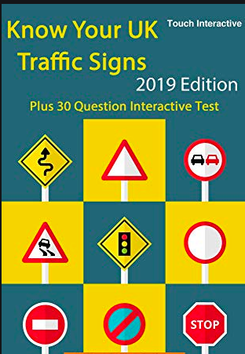

Although The Highway Code shows many of the signs commonly in use, a comprehensive explanation of our signing system is given in the Department’s booklet Know Your Traffic Signs, which is on sale at booksellers. The booklet also illustrates and explains the vast majority of signs the road user is likely to encounter.
The signs illustrated in The Highway Code are not all drawn to the same scale. In Wales, bilingual versions of some signs are used including Welsh and English versions of place names. Some older designs of signs may still be seen on the roads.